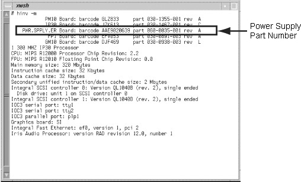

Operating Documentation
Direction 5114043-800, Rev# 9
LightSpeed 3.X Service Methods (Advanced)
Operating Documentation |
Table 1: V12 and DCD Common Problems
| SYMPTOM | POSSIBLE CAUSE |
|---|---|
| V12 or Display Option Board does not appear in hinv. | Either the board is installed incorrectly, or it is defective. Make sure the board is correctly seated. If re-seating the board does not solve the problem, the board may be defective. |
| Same image appears on both monitors. | Timing mode is set to single channel. |
| Monitors are blank. | Remove the 13W3 cover from the VPro Graphics Board monitor port and connect a monitor to this port. Enter hinv in a UNIX shell to see if the system recognizes the board. If the system does not recognize the board, it may not be seated properly or it may be defective. If re-seating the board does not solve the problem, the board may be defective. |
| In single channel modes, one monitor displays the image correctly, but the other monitor’s image is bad. | The board is probably defective. |
| The images on both monitors alternate between the correct image and noise, a constant color, or a badly flickering image. | The board is probably defective. |
| In dual channel mode, two superimposed flickering images appear on a monitor connected to the VPro Graphics Board monitor port. | Currently, the VPro Graphics Board monitor port is not disabled in dual channel mode. If you connect a monitor to the VPro Graphics Board monitor port in dual channel mode, the monitor displays alternating images from the left and right channels. |
Open a UNIX shell.
At the prompt, type: hinv | grep Graphics
The following line must appear: Graphics board: V12
If no graphics board appears, your operating system doesn’t recognize the hardware. You will not be able to communicate correctly with the graphics subsystem.
To function correctly, the V12 graphics card requires IRIX Version 6.5.10 or later. If for some reason after you installed software your graphics doesn’t work, perform the following check.
In a command line window, enter uname -R
Verify the installation of IRIX 6.5.10 or later.
To function correctly, the V12 graphics card requires a PROM revision of 4.5 or later. There are two methods for checking version:
Method 1:
While the system is booting, press the <ESC> key. The PROM menu appears.
Choose [ENTER COMMAND MONITOR] in the PROM menu. The Command line interface screen appears.
Enter version and verify the following:
SGI version 6.5 Rev 4.5 IP30, where 4.5 or later is the correct PROM revision for the V12 board.
Method 2:
You can also verify your PROM revision by typing flash -V in a UNIX shell, if your system is running IRIX 6.5.10 or later.
The V12 graphics board must have a frontplane “xbow” revision of 1.4 or later. The xbow is an ASIC device located on the frontplane. There are two methods for checking revision.
Method 1:
Shut down your system.
Restart your system.
While the system is booting, press the <ESC> key. The PROM menu appears.
Choose [ENTER COMMAND MONITOR] in the PROM menu. The Command line interface screen appears.
Enter System.
Xbow (rev 1.4 or later) should appear under Chips/NICs.
If Xbow (rev 1.3 or earlier) appears, the frontplane is incompatible with V12 graphics board.
Method 2:
If your system is running IRIX 6.5.10 or later, you can also verify this information as follows:
Open a Unix shell.
Enter hinv to display the hardware inventory list.
Xbow ASIC: Revision 1.4 should appear in the list.
If Xbow ASIC: Revision 1.3 or earlier appears, the frontplane is incompatible with V12 graphics board.
Check your power supply by entering hinv -m in a command line window. The hardware inventory list appears, as shown in the example in Illustration 1.
The part number for PWR.SPPLY.ER must be: 060-0035-00x, where x = 1 or higher, as shown in the example in Illustration 1.
If the above part number, in Illustration 1, is not displayed for PWR.SPPLY.ER, your power supply is incompatible with the V12 graphics card.
Illustration 1: Power Supply Version
